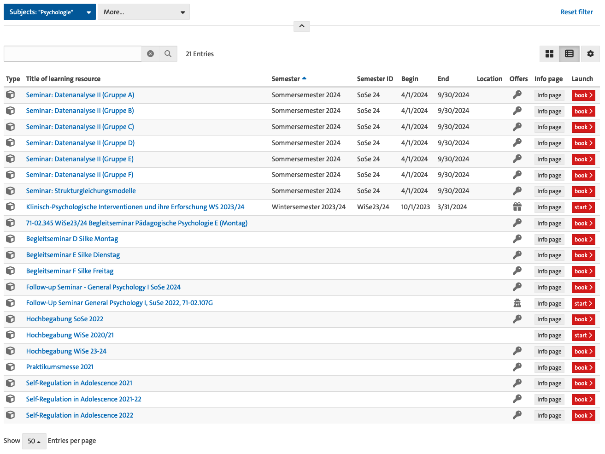

![]()
| Description | Category | Duration | Costs | |
|---|---|---|---|---|
| 1 | Student Research Assistant (MSc level) for 30 hours / month | HR | 15.08.2024 to 31.08.2025 | 7573.88 |
| 2 | Student Teaching Assistant (MSc level) for 2 SWS / month | HR | 14.10.24 to 01.02.25 | 2256.99 |
| 3 | License for Plausible.io | License | 01.09.2024 to 31.08.2025 | 107.10 |
| 4 | Travel by train to Berlin for TURN 2024 conference | Travel | 14.11.2024 to 15.11.2024 | 60.00 |
Implementing FAIR and reproducible teaching
Application for the “Claussen-Simon-Fonds für Wissenschaft & Hochschule”
About this document
This is an application for the Claussen-Simon-Fonds für Wissenschaft & Hochschule. An online version of this application is available at https://lennartwittkuhn.com/fair-teaching-proposal/. The contents of this proposal are available under a Creative Commons Attribution 4.0 International (CC BY 4.0) license and were developed using Quarto and Git. The source code of this application is available on GitHub at https://github.com/lnnrtwttkhn/fair-teaching-proposal. For questions, feedback or any other comments, please open an issue on GitHub at https://github.com/lnnrtwttkhn/fair-teaching-proposal/issues or send an email to lennart.wittkuhn@uni-hamburg.de.
Project Information
- Institution: University of Hamburg, Faculty of Psychology and Human Movement Science, Institute of Psychology, Department for “Cognitive Neuroscience of Learning and Change”
- Address: Von-Melle-Park 5, 20146 Hamburg
- Applicant: Dr. Lennart Wittkuhn, Postdoctoral Researcher
- Contact: lennart.wittkuhn@uni-hamburg.de, +49 (0)40 42838 5346
Project Description
Background
The main goal of this project is to develop, pilot and document a practical approach to FAIR (findable, accessible, interoperable, reusable), open and reproducible teaching and educational materials.
Science should be open, reproducible and verifiable. Yet, investigations across many scientific disciplines have uncovered that this might not be the case for a large proportion of published findings in the scientific literature. For example, several studies in the research field of Psychology estimate that more than half of research is not reproducible (Crüwell et al., 2023; Hardwicke et al., 2021; Obels et al., 2020; Open Science Collaboration, 2015; Wicherts et al., 2006). Thus, in an online survey of 1,500 researchers, 90% of the respondents agreed that science faces a “reproducibility crisis” (Baker, 2016). One main reason for this issue of irreproducibility is that materials needed to reproduce the results of a given study (research data, analysis code, software or other materials), are often not accessible, not even “upon (reasonable) request”. Even if resources are shared, they are often incomplete and do not allow for independent verification or reuse. Together, many researchers agree that “[…] accumulated evidence indicates that there is substantial room for improvement with regard to research practices to maximize the efficiency of the research community’s use of the public’s financial investment.” (Munafò et al., 2017)
While issues of accessibility and re-usability of research outputs are frequently discussed in the context of research data and analysis code, it is important to note that the same issues also apply to other outputs of academic activity, in particular the preparation and dissemination of teaching materials and other educational resources. Teaching activities take up a sizable portion of the working time of researchers at publicly funded universities. In Germany, lecturers at publicly-funded universities are required (by legal ordinances) to fulfill a certain number of teaching hours. Thus, a lot of time and expertise is put into the development of teaching materials. However, these valuable learning resources are rarely publicly available for public education or as a staring point for further (potentially collaborative) development by other educators.
To address the urgent need to improve infrastructure and academic frameworks supporting the reuse of scholarly data, a diverse consortium of stakeholders in science developed the FAIR Data Principles (Wilkinson et al., 2016) which state that research outputs should be Findable, Accessible, Interoperable and Reusable (Wilkinson et al., 2016). Originally developed as guiding principles for scientific data management and stewardship (Wilkinson et al., 2016), the FAIR principles are applicable to other types of scientific outputs as well, including teaching materials (see, e.g., Garcia et al., 2020). While some general recommendations exist on how to make teaching materials FAIR and reproducible (see, e.g., Garcia et al., 2020), specific guidelines, practical examples or tools for concrete implementation are scarce.
The goal of this project is to develop a concrete approach to implement the development of FAIR and reproducible teaching materials, pilot this approach in a concrete learning setting at University of Hamburg, as well as evaluate and document the experiences as guidelines for other researchers.
Implementation Plan
Overview of implementation plan
- Create a framework (in the form of a manual) for developing open educational resources (OER) in line with FAIR principles using Quarto and Git
- Implement the framework in a concrete course (for example, in a seminar) in winter semester 2024/25
- Offer training to teachers at University of Hamburg to implement the framework in their own teaching
- Evaluate the impact of the teaching framework using surveys and interviews with teachers and students
In the proposed project, we will develop a framework for creating open educational resources (OER) in a transparent, reproducible fashion, in line with FAIR principles (Wilkinson et al., 2016) using the open-source software tools Quarto and Git. First, we will develop the framework in the form of a manual with concrete recommendations and templates to implement FAIR and reproducible teaching using Quarto and Git (for preparatory work, see e.g., Plomp & Wittkuhn, 2023). Next, we will implement this framework in a concrete teaching project (for example, a seminar) at University of Hamburg during the winter semester 2024/25. In addition, we will offer research staff at the home institution (Institute of Psychology at University of Hamburg) opportunities to learn about both Quarto and Git, with a specific focus on encouraging attendees to create their own open educational resources (for example, websites, presentations and online surveys). This will allow lecturers to implement FAIR principles and reproducibility in their own teaching. Finally, we will document and evaluate the approach, also collecting feedback from both students and teachers via online survey and structured interviews. This documentation will result in a set of concrete recommendations in the implementation of FAIR and reproducible teaching materials for reuse by other teachers, lecturers and research institutions.
Our approach will rely on two technical tools: Quarto and Git that we will briefly introduce in the following section.
Quarto is a free and open-source scientific and technical publishing system developed by the open source data science company Posit (formerly know as RStudio) and available for all major operating systems (Windows, macOS and Linux). Quarto allows to create and publish reproducible, production quality articles, presentations, dashboards, websites, blogs, and books in various formats like HTML, PDF, MS Word and ePub. As a literate programming tool, Quarto can integrate prose with widely used programming languages like Python, R, Julia, and Observable. In the context of teaching materials, Quarto may be used to generate course websites, online textbooks and presentations, all within one technical framework. In addition, Quarto offers many tools that support accessibility and therefore allow for equitable and inclusive access to educational resources. For example, images and icons on Quarto websites can include metadata that make these elements accessible to screen readers. Figures created with code can include alternative text and there is code syntax highlighting with accessible color contrast. Finally, presentations can play sounds when slides are advanced which makes them more accessible for blind users.
Git is a free and open-source distributed version control system that tracks changes in any set of computer files, usually used for coordinating work among programmers who are collaboratively developing source code during software development. Due to its extensive benefits for transparent distributed work on digital objects, Git is increasingly adopted by scientists for research project management and collaborative development of text, code and data. Git is arguably the most popular version control system and can be considered a standard tool in the software industry and its popularity is evidenced by the 100 million users of the popular repository hosting service GitHub 1. “Version control is an approach to record changes made in a file or set of files over time so that you and your collaborators can track their history, review any changes, and revert or go back to earlier versions” (The Turing Way Community, 2022). Version control allows to keep track of changes in a directory on a computer (called a “repository”). Users can take snapshots (called “commits”) of the repository at any time. This allows to know the history of changes and understand what was changed when and by whom. Further, users can compare commits and go back to any previous state of their repository. In addition, Git allows to work on parallel versions (called “branches”) and flexibly integrate (or “merge”) them. Repository hosting services like GitHub, GitLab or Codeberg extend the benefits of version control by aspects of collaboration. Repositories can be uploaded (or “pushed”) to an online repository hosting service (called a “remote”) and shared either with a group of trusted collaborators, or made publicly available to anyone. This allows several researchers to work on the same files at the same time. Others can read, copy, edit and suggest changes. By making the repository public, work can be shared openly and transparently. Git is a command-line tool and available for all major operating systems (Windows, macOS and Linux). In addition, several graphical user interfaces exist and Git is integrated into many integrated development environments (IDEs) like RStudio and Visual Studio Code.
Description of the situation and equipment of the university
Teaching is a central pillar of any university and in particular at the University of Hamburg with its motto: “Der Forschung, Der Lehre, Der Bildung” (“To research, to teach, to educate and form”). In winter semester 2022/2023, more than 40,000 students (including doctoral students and students on academic leave) were enrolled at University of Hamburg in 75 bachelor’s programs and 89 master’s programs (for details, see facts and figures on the university homepage). Evidently, this means that this involves a lot of teaching and therefore time that is spent to create learning resources. The University of Hamburg provides platforms that support the development and distribution of teaching materials within the university.
Since 2009, the University of Hamburg uses OpenOlat, a teaching and learning platform for comprehensive eLearning courses. OpenOlat is the teaching and learning platform for comprehensive digital teaching offerings. The platform supports university teacher in daily tasks and workflows with tools for information provision, event organization and communication. It is particularly suitable for supplementing courses with a wide range of learning and exercise materials and for using digital examination formats.
To examine, the effectiveness of OpenOlat for the implementation of FAIR principles and reproducibility, we considered all entries assigned to the Institute of Psychology at the Department for Psychology and Human Movement Science. At the time of writing this proposal, for this institution OpenOlat listed 21 entries in total (see Figure 1). Of these 21 entries, 8 entries (ca. 40%) included relevant metadata, like the semester when the course took place. Strikingly, only 2 of 21 (ca. 10%) of the learning resources were available without access limitations (for example, password protection with an access code, indicated by the icon). While it is possible that different users get access to different resources (for example, students might have access to more learning resources than staff), it is probably fair to say to say that only a minority of OpenOlat learning resources are readily available for reuse and extension. In this example, those materials that are available are typically slides in PDF format. While the accessibility of some of the learning resources is better than none of them, opportunities for easy reuse and extensions are limited with PDF format. Together, this example illustrates the broader point made in the project background that learning resources are not readily available and if they are available, come in formats that are limited with respect to reuse and extension.

Another infrastructure offered by University of Hamburg is a search portal for teaching called “Lehre-Navi” (https://www.uni-hamburg.de/lehre-navi.html). The “Lehre-Navi” portal was designed by the DUTy (Digital University Teaching Literacy) team in the “Digital and Data University Teaching Literacy” (DDLitLab) project at University of Hamburg, but is largely based on the material and services already provided elsewhere at the university. These offerings - as well as general information for teachers - are brought together on the Lehre-Navi platform. Again, while the this platform offers a great diversity of open learning resources, from technical instructions and text to audio and video recordings, these materials do not offer mechanisms to effectively reuse and extend the materials.
Importantly, both these infrastructures (OpenOlat and Lehre-Navi) do not offer a systematic way to support collaborative development of learning resources. While OpenOlat allows to synchronize collaborative work in office tools using OnlyOffice, this limits teaching formats to office formats similar to Word, Powerpoint and Excel, which are widely used but are proprietary programs. A core advantage of the proposed approach is that it is at the same time fully independent from institutional infrastructure and can therefore be easily transferred between institutions while also being easy to integrate with existing university infrastructure. As briefly described in the project description, the tools proposed for our approach to the development of teaching materials, Quarto and Git, are free to use, open source and available for all major operating systems (Windows, macOS, Linux). They are easy to install and there is extensive documentation on their use online. In addition, the applicant is experienced in teaching these tools (for Git, see for example: https://lennartwittkuhn.com/version-control-course-uhh-ss24/; for Quarto, see for example: https://lennartwittkuhn.com/quarto-workshop/). To share contents tracked with Git with others, a Git repository hosting service like GitHub or GitLab is needed. While platforms like GitHub offer more than enough functionality for the free development of content on their platform, it is relevant to consider that these services are offered by for-profit companies (here, Microsoft) that could change access to resources or their pricing policy in way that disadvantages researchers. Here, the University of Hamburg offers an instance of the Git repository hosting platform GitLab (see https://gitlab.rrz.uni-hamburg.de/users/sign_in). For details in German see here: https://www.rrz.uni-hamburg.de/services/datenhaltung/repositories/gitlab.html Together, the tools at the center of our proposed approach are readily available to researcher and can be easily integrated with existing infrastructure provided by the University of Hamburg. Finally, the proposal fruitfully links up to the university’s ambitious digital strategy that aims to drive digitalization in research and teaching.
Target group
There are two main target groups of the proposed project: research staff and students.
One main target group of the project are research staff at the Institute of Psychology at the University of Hamburg who are involved in teaching. Our project aims to develop and pilot a new approach to the development of teaching materials. As described in the implementation plan, we plan to involve research staff in the following way: First, we will offer workshops on how to create FAIR and reproducible teaching materials using Quarto and Git. Second, we will support teaching research staff in the implementation of the proposed approach in their teaching. Third, we will conduct surveys and structured interviews with research staff to evaluate our novel teaching approach and identify potential pitfalls and further opportunities for improvement.
The second main target group are MSc and PhD students at the Institute of Psychology at the University of Hamburg. In particular, the Master of Science in Psychology is a new consecutive program that is international and strongly research-oriented. Extensive methodological and statistical skills are taught in required modules. The degree program places special emphasis on methods, which are taught in depth in complementary basic research modules, applied modules, a project seminar, and a thesis module.
Implementing open and FAIR teaching development will give students the opportunity to participate in the development of their own teaching materials. While students can view and directly contribute to the teaching materials as they are developed, they can also participate in the development of educational resources by contributing feedback on the course contents, for example by sharing ideas or reporting issues through a dedicated feedback system that is integrated with the course contents. For example, in a previous course a student reported a problem with an online quiz that was used to assess course participant’s knowledge about the learning materials (see here). The course instructors could then respond to the issue directly and link it to the update in the course materials that solve the issue. This provides transparency to the student who can see when and how the issue was resolved but also allows future users of the materials to establish provenance and understand why a certain change in the course materials was implemented. This enables them to reflect on increasingly digital and data-driven economic and societal processes and thus promotes participatory “self-empowered citizenship”.
As described in the implementation plan, we will pilot the introduction of FAIR and reproducible teaching methods, in courses that focus on teaching digital research skills that will be offered to MSc and PhD students at the Institute of Psychology. We will evaluate the impact of our proposed approach from a student approach that will complement the feedback from the teachers (see above) and help us to further refine the proposed teaching approach.
Financial Needs
Overview
In sum, the expected total costs of the project are ~ 10000 Euro.
We provide additional justification for the financial needs below.
Justification
Regarding 1 (Student Research Assistant (MSc level) for 30 hours / month):
The student research assistant (RA) will help to create new and adapt existing learning materials focused on the development of FAIR and reproducible teaching materials. Specifically, the student RA will support the development of learning materials for Quarto and Git, the tools that are at the center of our approach. In addition, the student RA will contriubute to the development and analysis surveys and quizzes that allow to collect continuous feedback from both students and teachers to address any challenges or identify opportunities for improvement.
Regarding 2 (Student Teaching Assistant (MSc level) for 2 SWS / month):
A teaching assistant (TA) is crucial for providing individualized support, timely feedback, and technical troubleshooting to course participants. The TA supports the instructional content, manages assessments during class, and ensures a consistent learning experience for course participants with varying levels of familiarity with the learning concepts.
Regarding 3 (License for Plausible.io):
All course materials will be shared as publicly accessible websites hosted via GitHub Pages. We will use website analytics to gain insights into reach and dissemination of the teaching materials. These insights will allow us to better understand how users engage with our online learning materials and derive opportunities for improvements. We will use Plausible, which provides “intuitive, lightweight and open source web analytics”, does not use cookies and is fully compliant with GDPR, CCPA and PECR. A subscription plan with a monthly quota of up to 10k pageviews for 1 year will be selected.
Regarding 4 (Travel by train to Berlin for TURN 2024 conference):
I submitted an abstract to the TURN 2024 conference, taking place in Berlin from 14.11.2024 to 15.11.2024, to give a talk about the proposed teaching approach. The funding will cover travel from Hamburg to Berlin (and back) by train. Accommodation can be arranged privately.
Acknowledgements
We thank Alexa Ruel (https://orcid.org/0000-0003-4119-0659) and Konrad Pagenstedt (https://orcid.org/0009-0000-6867-1546) for helpful feedback on a previous version of this proposal.
References
Baker, M. (2016). 1,500 scientists lift the lid on reproducibility. Nature, 533(7604), 452–454. https://doi.org/10.1038/533452a
Crüwell, S., Apthorp, D., Baker, B. J., Colling, L., Elson, M., Geiger, S. J., Lobentanzer, S., Monéger, J., Patterson, A., Schwarzkopf, D. S., Zaneva, M., & Brown, N. J. L. (2023). What’s in a Badge? A Computational Reproducibility Investigation of the Open Data Badge Policy in One Issue of Psychological Science. Psychological Science, 34(4), 512–522. https://doi.org/10.1177/09567976221140828
Garcia, L., Batut, B., Burke, M. L., Kuzak, M., Psomopoulos, F., Arcila, R., Attwood, T. K., Beard, N., Carvalho-Silva, D., Dimopoulos, A. C., Angel, V. D. del, Dumontier, M., Gurwitz, K. T., Krause, R., McQuilton, P., Le Pera, L., Morgan, S. L., Rauste, P., Via, A., … Palagi, P. M. (2020). Ten simple rules for making training materials FAIR. PLOS Computational Biology, 16(5), e1007854. https://doi.org/10.1371/journal.pcbi.1007854
Hardwicke, T. E., Bohn, M., MacDonald, K., Hembacher, E., Nuijten, M. B., Peloquin, B. N., deMayo, B. E., Long, B., Yoon, E. J., & Frank, M. C. (2021). Analytic reproducibility in articles receiving open data badges at the journal Psychological Science : an observational study. Royal Society Open Science, 8(1). https://doi.org/10.1098/rsos.201494
Munafò, M. R., Nosek, B. A., Bishop, D. V. M., Button, K. S., Chambers, C. D., Percie du Sert, N., Simonsohn, U., Wagenmakers, E.-J., Ware, J. J., & Ioannidis, J. P. A. (2017). A manifesto for reproducible science. Nature Human Behaviour, 1(1). https://doi.org/10.1038/s41562-016-0021
Obels, P., Lakens, D., Coles, N. A., Gottfried, J., & Green, S. A. (2020). Analysis of Open Data and Computational Reproducibility in Registered Reports in Psychology. Advances in Methods and Practices in Psychological Science, 3(2), 229–237. https://doi.org/10.1177/2515245920918872
Open Science Collaboration. (2015). Estimating the reproducibility of psychological science. Science, 349(6251). https://doi.org/10.1126/science.aac4716
Plomp, E., & Wittkuhn, L. (2023). Reproducible and FAIR teaching materials. Zenodo. https://doi.org/10.5281/ZENODO.8296951
The Turing Way Community. (2022). The Turing Way: A handbook for reproducible, ethical and collaborative research. Zenodo. https://doi.org/10.5281/ZENODO.7625728
Wicherts, J. M., Borsboom, D., Kats, J., & Molenaar, D. (2006). The poor availability of psychological research data for reanalysis. American Psychologist, 61(7), 726–728. https://doi.org/10.1037/0003-066x.61.7.726
Wilkinson, M. D., Dumontier, M., Aalbersberg, Ij. J., Appleton, G., Axton, M., Baak, A., Blomberg, N., Boiten, J.-W., Silva Santos, L. B. da, Bourne, P. E., Bouwman, J., Brookes, A. J., Clark, T., Crosas, M., Dillo, I., Dumon, O., Edmunds, S., Evelo, C. T., Finkers, R., … Mons, B. (2016). The FAIR Guiding Principles for scientific data management and stewardship. Scientific Data, 3(1). https://doi.org/10.1038/sdata.2016.18